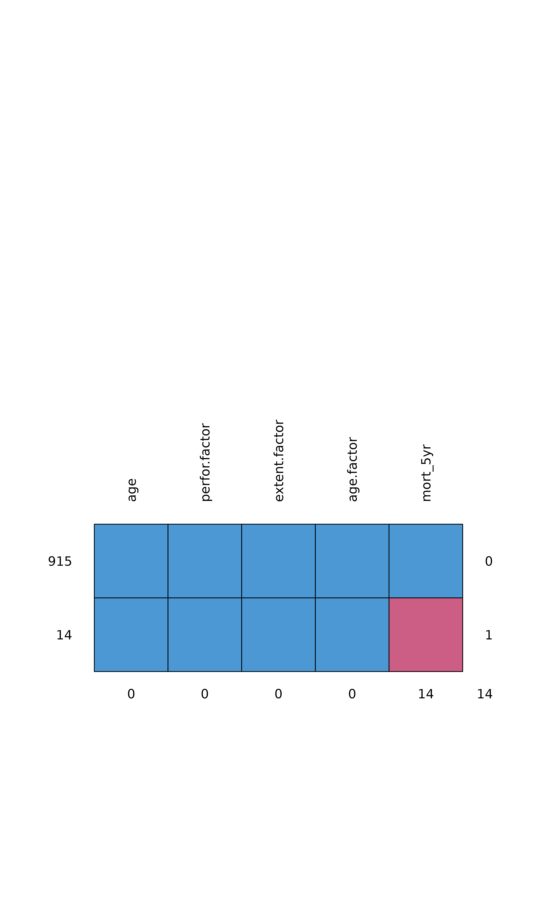

Compare missing data
missing_compare(.data, dependent, explanatory, na_include = FALSE)
| .data | Dataframe. |
|---|---|
| dependent | Variable to test missingness against other variables with. |
| explanatory | Variables to have missingness tested against. |
| na_include | Include missing data in explanatory variables as a factor level. |
A dataframe comparing missing data in the dependent variable across explanatory variables. Continuous data are compared with a Kruskal Wallis test. Discrete data are compared with a chi-squared test.
library(finalfit) explanatory = c("age", "age.factor", "extent.factor", "perfor.factor") dependent = "mort_5yr" colon_s %>% ff_glimpse(dependent, explanatory)#> Numerics #> label n missing_n missing_percent mean sd min quartile_25 median #> age Age (years) 929 0 0.0 59.8 11.9 18.0 53.0 61.0 #> quartile_75 max #> age 69.0 85.0 #> #> Factors #> label n missing_n missing_percent levels_n #> perfor.factor Perforation 929 0 0.0 2 #> extent.factor Extent of spread 929 0 0.0 4 #> age.factor Age 929 0 0.0 3 #> mort_5yr Mortality 5 year 915 14 1.5 2 #> levels #> perfor.factor "No", "Yes" #> extent.factor "Submucosa", "Muscle", "Serosa", "Adjacent structures" #> age.factor "<40 years", "40-59 years", "60+ years" #> mort_5yr "Alive", "Died", "(Missing)" #> levels_count levels_percent #> perfor.factor 902, 27 97.1, 2.9 #> extent.factor 21, 106, 759, 43 2.3, 11.4, 81.7, 4.6 #> age.factor 70, 344, 515 7.5, 37.0, 55.4 #> mort_5yr 511, 404, 14 55.0, 43.5, 1.5#> age perfor.factor extent.factor age.factor mort_5yr #> 915 1 1 1 1 1 0 #> 14 1 1 1 1 0 1 #> 0 0 0 0 14 14colon_s %>% missing_compare(dependent, explanatory)#> Warning: Chi-squared approximation may be incorrect#> Warning: Chi-squared approximation may be incorrect#> Warning: Chi-squared approximation may be incorrect#> Missing data analysis: Mortality 5 year Not missing #> 1 Age (years) Mean (SD) 59.8 (11.9) #> 2 Age <40 years 67 (95.7) #> 3 40-59 years 339 (98.5) #> 4 60+ years 509 (98.8) #> 5 Extent of spread Submucosa 20 (95.2) #> 6 Muscle 103 (97.2) #> 7 Serosa 750 (98.8) #> 8 Adjacent structures 42 (97.7) #> 9 Perforation No 888 (98.4) #> 10 Yes 27 (100.0) #> Missing p #> 1 53.9 (12.7) 0.077 #> 2 3 (4.3) 0.132 #> 3 5 (1.5) #> 4 6 (1.2) #> 5 1 (4.8) 0.325 #> 6 3 (2.8) #> 7 9 (1.2) #> 8 1 (2.3) #> 9 14 (1.6) 0.514 #> 10 0 (0.0)